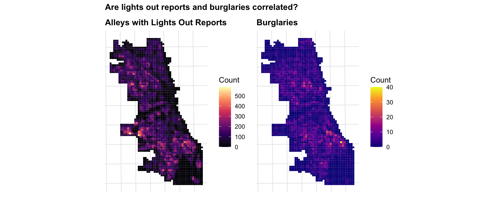

Modelling for Chicago Burglaries and 311 Service Request
Author
Henry Yang
Published
November 5, 2025
Assignment Overview
In this lab, you will apply the spatial predictive modeling techniques demonstrated in the class exercise to a 311 service request type of your choice. You will build a complete spatial predictive model, document your process, and interpret your results.
Learning Goals
By completing this assignment, you will demonstrate your ability to:
Adapt example code to analyze a new dataset
Build spatial features for predictive modeling
Apply count regression techniques to spatial data
Implement spatial cross-validation
Interpret and communicate model results
Critically evaluate model performance
Step 1: Choose Your 311 Violation Type
Setup
# Load required packageslibrary(tidyverse) # Data manipulationlibrary(sf) # Spatial operationslibrary(here) # Relative file pathslibrary(viridis) # Color scaleslibrary(terra) # Raster operations (replaces 'raster')library(spdep) # Spatial dependencelibrary(FNN) # Fast nearest neighborslibrary(MASS) # Negative binomial regressionlibrary(patchwork) # Plot composition (replaces grid/gridExtra)library(knitr) # Tableslibrary(kableExtra) # Table formattinglibrary(classInt) # Classification intervalslibrary(here)# Spatstat split into sub-packageslibrary(spatstat.geom) # Spatial geometrieslibrary(spatstat.explore) # Spatial exploration/KDE# Set optionsoptions(scipen =999) # No scientific notationset.seed(5080) # Reproducibility# Create consistent theme for visualizationstheme_crime <-function(base_size =11) {theme_minimal(base_size = base_size) +theme(plot.title =element_text(face ="bold", size = base_size +1),plot.subtitle =element_text(color ="gray30", size = base_size -1),legend.position ="right",panel.grid.minor =element_blank(),axis.text =element_blank(),axis.title =element_blank() )}# Set as defaulttheme_set(theme_crime())cat("✓ All packages loaded successfully!\n")
✓ All packages loaded successfully!
cat("✓ Working directory:", getwd(), "\n")
✓ Working directory: /Users/henryyang/Desktop/MasterStuff/CPLN5920/Code/portfolio-setup-henryyzh1/Labs/lab_4/script
NoteCoordinate Reference System
We’re using ESRI:102271 (Illinois State Plane East, NAD83, US Feet). This is appropriate for Chicago because:
# Load from provided data file (downloaded from Chicago open data portal)burglaries <-st_read(here("data", "burglaries.shp"), quiet =TRUE) %>%st_transform('ESRI:102271', quiet =TRUE)# Check the datacat("\n✓ Loaded burglary data\n")
✓ Loaded burglary data
cat(" - Number of burglaries:", nrow(burglaries), "\n")
# Load from provided data file (downloaded from Chicago open data portal)lights_out <-read.csv(here("data","311_Alley_Lights_Out.csv")) %>%filter(!is.na(Longitude), !is.na(Latitude)) %>%st_as_sf(coords =c("Longitude", "Latitude"), crs =4326) %>%st_transform('ESRI:102271', quiet =TRUE)# Check the datacat("\n✓ Loaded alley data\n")
✓ Loaded alley data
cat(" - Number of lights out reports:", nrow(lights_out), "\n")
Downgraded offenses (burglary recorded as trespassing)
Spatial bias (more patrol = more recorded crime)
Step 2: Complete the Analysis
Part 1: Data Loading & Exploration
Load your 311 data and Chicago spatial boundaries
Create visualizations showing the spatial distribution of your violation type
Describe patterns you observe
# Simple point mapp1 <-ggplot() +geom_sf(data = chicagoBoundary, fill ="gray95", color ="gray60") +geom_sf(data = burglaries, color ="#d62828", size =0.1, alpha =0.4) +labs(title ="Burglary Locations",subtitle =paste0("Chicago 2017, n = ", nrow(burglaries)) )# Density surface using modern syntaxp2 <-ggplot() +geom_sf(data = chicagoBoundary, fill ="gray95", color ="gray60") +geom_density_2d_filled(data =data.frame(st_coordinates(burglaries)),aes(X, Y),alpha =0.7,bins =8 ) +scale_fill_viridis_d(option ="plasma",direction =-1,guide ="none"# Modern ggplot2 syntax (not guide = FALSE) ) +labs(title ="Density Surface",subtitle ="Kernel density estimation" )# Combine plots using patchwork (modern approach)p1 + p2 +plot_annotation(title ="Spatial Distribution of Burglaries in Chicago",tag_levels ='A' )
What I did: I loaded the Chicago Police Department burglary report dataset and Chicago’s community boundary shapefile. Then, I mapped the raw point locations and created a kernel density surface to visualize spatial intensity.
Why this matters: Everything starts from data loading and EPA. Visualizing the raw points and density helps reveal whether reports are randomly distributed or concentrated in particular neighborhoods—an essential foundation before any spatial statistics or modeling.
What I found: The burglary reports are not evenly distributed across Chicago. They cluster mainly around West Town, and the South Side, especially in South Shore, and Midway areas.
Part 2: Fishnet Grid Creation
Create a 500m x 500m fishnet grid
Aggregate your violations to grid cells
Visualize the count distribution
# Create 500m x 500m gridfishnet <-st_make_grid( chicagoBoundary,cellsize =500, # 500 meters per cellsquare =TRUE) %>%st_sf() %>%mutate(uniqueID =row_number())# Keep only cells that intersect Chicagofishnet <- fishnet[chicagoBoundary, ]# View basic infocat("✓ Created fishnet grid\n")
# Spatial join: which cell contains each burglary?burglaries_fishnet <-st_join(burglaries, fishnet, join = st_within) %>%st_drop_geometry() %>%group_by(uniqueID) %>%summarize(countBurglaries =n())# Join back to fishnet (cells with 0 burglaries will be NA)fishnet <- fishnet %>%left_join(burglaries_fishnet, by ="uniqueID") %>%mutate(countBurglaries =replace_na(countBurglaries, 0))# Summary statisticscat("\nBurglary count distribution:\n")
Burglary count distribution:
summary(fishnet$countBurglaries)
Min. 1st Qu. Median Mean 3rd Qu. Max.
0.000 0.000 2.000 3.042 5.000 40.000
cat("\nCells with zero burglaries:", sum(fishnet$countBurglaries ==0), "/", nrow(fishnet),"(", round(100*sum(fishnet$countBurglaries ==0) /nrow(fishnet), 1), "%)\n")
Cells with zero burglaries: 781 / 2458 ( 31.8 %)
# Visualize aggregated countsggplot() +geom_sf(data = fishnet, aes(fill = countBurglaries), color =NA) +geom_sf(data = chicagoBoundary, fill =NA, color ="white", linewidth =1) +scale_fill_viridis_c(name ="Burglaries",option ="plasma",trans ="sqrt", # Square root for better visualization of skewed databreaks =c(0, 1, 5, 10, 20, 40) ) +labs(title ="Burglary Counts by Grid Cell",subtitle ="500m x 500m cells, Chicago 2017" ) +theme_crime()
# Aggregate lights out reports to fishnetreport_fishnet <-st_join(lights_out, fishnet, join = st_within) %>%st_drop_geometry() %>%group_by(uniqueID) %>%summarize(lights_out =n())# Join to fishnetfishnet <- fishnet %>%left_join(report_fishnet, by ="uniqueID") %>%mutate(lights_out =replace_na(lights_out, 0))cat("Lighs out report distribution:\n")
Lighs out report distribution:
summary(fishnet$lights_out)
Min. 1st Qu. Median Mean 3rd Qu. Max.
0.00 11.00 77.00 89.04 139.00 585.00
cat("\nCells with zero reports:", sum(fishnet$lights_out ==0), "/", nrow(fishnet),"(", round(100*sum(fishnet$lights_out ==0) /nrow(fishnet), 1), "%)\n")
Cells with zero reports: 362 / 2458 ( 14.7 %)
p1 <-ggplot() +geom_sf(data = fishnet, aes(fill = lights_out), color =NA) +scale_fill_viridis_c(name ="Count", option ="magma") +labs(title ="Alleys with Lights Out Reports") +theme_crime()p2 <-ggplot() +geom_sf(data = fishnet, aes(fill = countBurglaries), color =NA) +scale_fill_viridis_c(name ="Count", option ="plasma") +labs(title ="Burglaries") +theme_crime()p1 + p2 +plot_annotation(title ="Are lights out reports and burglaries correlated?")

What I did: I created a 500 m × 500 m fishnet grid covering Chicago and used a spatial join to aggregate all burglaries reports to their corresponding cells. Then, I visualized the count of reports per grid cell to examine the spatial distribution. Same operations applied to 311 Alleys with Lights Out reports dataset.
Why this matters: Using a regular grid standardizes spatial units for later modeling. It avoids biases from administrative boundaries (like MAUP) and allows consistent comparison of event density across space. This aggregation step also prepares the data for spatial statistics (e.g., Local Moran’s I) and regression analysis.
What I found: Both datasets are highly skewed and spatially clustered rather than random. For Lights Out reports, counts reach up to 585 per cell, with around 15 % of cells reporting none. For Burglaries, counts peak at 40 per cell, with around 32 % of cells reporting none. Both show overlapping clusters along the South Side areas.
Part 3: Spatial Features
Calculate k-nearest neighbor features
Perform Local Moran’s I analysis
Identify hot spots and cold spots
Create distance-to-hotspot measures
Join any additional contextual data if you are looking for more to do and really get into this (e.g., demographics, land use)
# Calculate mean distance to 3 nearest abandoned cars# (Do this OUTSIDE of mutate to avoid sf conflicts)# Get coordinatesfishnet_coords <-st_coordinates(st_centroid(fishnet))reports_coords <-st_coordinates(lights_out)# Calculate k nearest neighbors and distancesnn_result <-get.knnx(reports_coords, fishnet_coords, k =3)# Add to fishnetfishnet <- fishnet %>%mutate(lights_out.nn =rowMeans(nn_result$nn.dist) )cat("✓ Calculated nearest neighbor distances\n")
✓ Calculated nearest neighbor distances
summary(fishnet$lights_out.nn)
Min. 1st Qu. Median Mean 3rd Qu. Max.
2.711 41.072 68.831 169.671 187.905 1706.739
# Function to calculate Local Moran's Icalculate_local_morans <-function(data, variable, k =5) {# Create spatial weights coords <-st_coordinates(st_centroid(data)) neighbors <-knn2nb(knearneigh(coords, k = k)) weights <-nb2listw(neighbors, style ="W", zero.policy =TRUE)# Calculate Local Moran's I local_moran <-localmoran(data[[variable]], weights)# Classify clusters mean_val <-mean(data[[variable]], na.rm =TRUE) data %>%mutate(local_i = local_moran[, 1],p_value = local_moran[, 5],is_significant = p_value <0.05,moran_class =case_when(!is_significant ~"Not Significant", local_i >0& .data[[variable]] > mean_val ~"High-High", local_i >0& .data[[variable]] <= mean_val ~"Low-Low", local_i <0& .data[[variable]] > mean_val ~"High-Low", local_i <0& .data[[variable]] <= mean_val ~"Low-High",TRUE~"Not Significant" ) )}# Apply to lights out reportsfishnet <-calculate_local_morans(fishnet, "lights_out", k =5)
# Visualize hot spotsggplot() +geom_sf(data = fishnet, aes(fill = moran_class), color =NA ) +scale_fill_manual(values =c("High-High"="#d7191c","High-Low"="#fdae61","Low-High"="#abd9e9","Low-Low"="#2c7bb6","Not Significant"="gray90" ),name ="Cluster Type" ) +labs(title ="Local Moran's I: Lights Out Reports Clusters",subtitle ="High-High = Hot spots of disorder" ) +theme_crime()
# Get centroids of "High-High" cells (hot spots)hotspots <- fishnet %>%filter(moran_class =="High-High") %>%st_centroid()# Calculate distance from each cell to nearest hot spotif (nrow(hotspots) >0) { fishnet <- fishnet %>%mutate(dist_to_hotspot =as.numeric(st_distance(st_centroid(fishnet), hotspots %>%st_union()) ) )cat("✓ Calculated distance to lights out reports hot spots\n")cat(" - Number of hot spot cells:", nrow(hotspots), "\n")} else { fishnet <- fishnet %>%mutate(dist_to_hotspot =0)cat("⚠ No significant hot spots found\n")}
✓ Calculated distance to lights out reports hot spots
- Number of hot spot cells: 288
What I did: I calculated each grid cell’s average distance to its three nearest burglary reports to capture local proximity effects. Then, I used Local Moran’s I to identify statistically significant clusters—High-High (hot spots) and Low-Low (cold spots)—and computed the distance from each cell to the nearest hot spot.
Why this matters: These operations are making spatial dependence and neighborhood context quantified. Distance to clusters provides more info than distance to individual points. This reflects how close a location is to areas with systematic problems rather than random incidents. Meanwhile, local Moran’s I measures spatial autocorrelation, revealing patterns of clustering or spatial inequality.
What I found: There are about 12% cells are computed as hot spots of burglary reports, which are mainly in the South Side, Midway, and Belmont areas. While Downtown, lake shore, and Marsh Park areas shows large cold-spot zones.
Part 4: Count Regression Models
Fit Poisson regression
Fit Negative Binomial regression
Compare model fit (AIC)
# Join district information to fishnetfishnet <-st_join( fishnet, policeDistricts,join = st_within,left =TRUE) %>%filter(!is.na(District)) # Remove cells outside districtscat("✓ Joined police districts\n")
What I did: I joined the Chicago police district boundaries to the fishnet grid and prepared a modeling dataset with 1,708 valid grid cells. Then, I fit both a Poisson regression and a Negative Binomial regression to predict burglary counts using spatial predictors: a) total number of “Lights Out” reports (lights_out), b) mean distance to nearest lights-out reports (lights_out.nn), and c) distance to the nearest lights-out hot spot (dist_to_hotspot).
Why this matters: This step tests whether alleys with lights out is spatially associated with burglary occurrence. Poisson regression is a baseline for count data, but when variance exceeds the mean (overdispersion), a Negative Binomial model provides a more realistic fit. Comparing AIC values helps identify the better model.
What I found: The Poisson model showed overdispersion (dispersion = 3.11 > 1.5), so the Negative Binomial model was used. • The coefficient for lights_out is positive and significant, suggesting burglaries increase where more lights-out reports occur. • lights_out.nn and dist_to_hotspot both have negative coefficients, meaning burglaries are less likely where lights-out events are farther away or more dispersed. • Model fit improved substantially (AIC: 8809 -> 7418), confirming that the Negative Binomial regression better explains spatial variation in burglary counts. To conclude, burglary risk tends to rise in areas with nearby or clustered lighting outages.
Part 5: Spatial Cross-Validation (2017)
Implement Leave-One-Group-Out cross-validation on 2017 data
Calculate and report error metrics (MAE, RMSE)
# Get unique districtsdistricts <-unique(fishnet_model$District)cv_results <-tibble()cat("Running LOGO Cross-Validation...\n")
Running LOGO Cross-Validation...
for (i inseq_along(districts)) { test_district <- districts[i]# Split data train_data <- fishnet_model %>%filter(District != test_district) test_data <- fishnet_model %>%filter(District == test_district)# Fit model on training data model_cv <-glm.nb( countBurglaries ~ lights_out + lights_out.nn + dist_to_hotspot,data = train_data )# Predict on test data test_data <- test_data %>%mutate(prediction =predict(model_cv, test_data, type ="response") )# Calculate metrics mae <-mean(abs(test_data$countBurglaries - test_data$prediction)) rmse <-sqrt(mean((test_data$countBurglaries - test_data$prediction)^2))# Store results cv_results <-bind_rows( cv_results,tibble(fold = i,test_district = test_district,n_test =nrow(test_data),mae = mae,rmse = rmse ) )cat(" Fold", i, "/", length(districts), "- District", test_district, "- MAE:", round(mae, 2), "\n")}
Fold 1 / 22 - District 5 - MAE: 1.94
Fold 2 / 22 - District 4 - MAE: 1.77
Fold 3 / 22 - District 22 - MAE: 2.26
Fold 4 / 22 - District 6 - MAE: 2.9
Fold 5 / 22 - District 8 - MAE: 3.07
Fold 6 / 22 - District 7 - MAE: 2.99
Fold 7 / 22 - District 3 - MAE: 5.73
Fold 8 / 22 - District 2 - MAE: 2.66
Fold 9 / 22 - District 9 - MAE: 1.86
Fold 10 / 22 - District 10 - MAE: 2.08
Fold 11 / 22 - District 1 - MAE: 1.97
Fold 12 / 22 - District 12 - MAE: 3.01
Fold 13 / 22 - District 15 - MAE: 1.85
Fold 14 / 22 - District 11 - MAE: 2.46
Fold 15 / 22 - District 18 - MAE: 2.54
Fold 16 / 22 - District 25 - MAE: 2.41
Fold 17 / 22 - District 14 - MAE: 2.63
Fold 18 / 22 - District 19 - MAE: 2.1
Fold 19 / 22 - District 16 - MAE: 2.84
Fold 20 / 22 - District 17 - MAE: 1.88
Fold 21 / 22 - District 20 - MAE: 1.88
Fold 22 / 22 - District 24 - MAE: 2.06
# Show resultscv_results %>%arrange(desc(mae)) %>%kable(digits =2,caption ="LOGO CV Results by District" ) %>%kable_styling(bootstrap_options =c("striped", "hover"))
LOGO CV Results by District
fold
test_district
n_test
mae
rmse
7
3
43
5.73
7.75
5
8
197
3.07
4.17
12
12
73
3.01
4.54
6
7
52
2.99
3.90
4
6
63
2.90
4.47
19
16
129
2.84
3.30
8
2
56
2.66
3.59
17
14
46
2.63
4.01
15
18
30
2.54
4.25
14
11
43
2.46
3.34
16
25
85
2.41
3.32
3
22
112
2.26
2.74
18
19
63
2.10
2.65
10
10
63
2.08
2.96
22
24
41
2.06
2.70
11
1
28
1.97
2.63
1
5
98
1.94
2.70
21
20
30
1.88
2.27
20
17
82
1.88
2.27
9
9
107
1.86
2.39
13
15
32
1.85
2.32
2
4
235
1.77
3.46
What I did: I performed a Leave-One-Group-Out (LOGO) cross-validation by holding out each police district once as the test set while training the Negative Binomial model on the remaining districts. For each fold, I computed Mean Absolute Error (MAE) and Root Mean Squared Error (RMSE) to assess predictive performance across space.
Why this matters: Traditional k-fold CV ignores spatial dependence and can overstate accuracy when nearby observations share information. The LOGO approach enforces spatial independence by testing each district entirely unseen, providing a more realistic evaluation of how well the model generalizes to new geographic areas.
What I found: Model performance varied by district — MAE ranged from about 1.8 to 5.7, with the mean MAE = 2.5 and mean RMSE = 3.44. District 3 showed the highest error, indicating local variability not fully captured by the model. Overall, prediction errors remain moderate, suggesting the model can generalize spatially but still struggles in heterogeneous or high-crime areas.
Part 6: Model Evaluation
Generate final predictions for both years
Compare to KDE baseline
Assess model performance across time
# Convert lights out reports to ppp (point pattern) format for spatstatreports_ppp <-as.ppp(st_coordinates(lights_out),W =as.owin(st_bbox(chicagoBoundary)))# Calculate KDE with 1km bandwidthkde_reports <-density.ppp( reports_ppp,sigma =1000, # 1km bandwidthedge =TRUE# Edge correction)# Convert to terra raster (modern approach, not raster::raster)kde_raster <-rast(kde_reports)# Extract KDE values to fishnet cellsfishnet <- fishnet %>%mutate(kde_value = terra::extract( kde_raster,vect(fishnet),fun = mean,na.rm =TRUE )[, 2] # Extract just the values column )cat("✓ Calculated KDE baseline\n")
✓ Calculated KDE baseline
ggplot() +geom_sf(data = fishnet, aes(fill = kde_value), color =NA) +geom_sf(data = chicagoBoundary, fill =NA, color ="white", linewidth =1) +scale_fill_viridis_c(name ="KDE Value",option ="plasma" ) +labs(title ="Kernel Density Estimation Baseline",subtitle ="Simple spatial smoothing of lights out reports locations" ) +theme_crime()
# Fit final model on all datafinal_model <-glm.nb( countBurglaries ~ lights_out + lights_out.nn + dist_to_hotspot,data = fishnet_model)# Add predictions back to fishnetfishnet <- fishnet %>%mutate(prediction_nb =predict(final_model, fishnet_model, type ="response")[match(uniqueID, fishnet_model$uniqueID)] )# Also add KDE predictions (normalize to same scale as counts)kde_sum <-sum(fishnet$kde_value, na.rm =TRUE)count_sum <-sum(fishnet$countBurglaries, na.rm =TRUE)fishnet <- fishnet %>%mutate(prediction_kde = (kde_value / kde_sum) * count_sum )
Final Negative Binomial Model Coefficients (Exponentiated)
Variable
Rate Ratio
Std. Error
Z
P-Value
(Intercept)
5.090
0.08
20.268
0.000
lights_out
1.002
0.00
4.817
0.000
lights_out.nn
0.993
0.00
-16.587
0.000
dist_to_hotspot
1.000
0.00
-2.468
0.014
Note:
Rate ratios > 1 indicate positive association with burglary counts.
What I did: I generated final burglary predictions using the Negative Binomial model and compared them to a KDE (Kernel Density Estimation) baseline that spatially smooths “Lights Out” report locations. Both prediction surfaces were visualized and evaluated using Mean Absolute Error (MAE) and Root Mean Squared Error (RMSE) to assess model accuracy.
Why this matters: Comparing a statistical model to a non-parametric spatial baseline (KDE) tests whether incorporating spatial features (e.g., lights-out counts, proximity, hot spot distance) actually improves predictive performance. KDE captures general spatial trends, while the Negative Binomial model adds interpretable structure.
What I found: The Negative Binomial model achieved slightly better accuracy (MAE = 2.38, RMSE = 3.48) than the KDE baseline (MAE = 2.55, RMSE = 3.59). Visually, both surfaces capture the same high-risk areas on the South Side, Midway and Belmont areas, but the model better reproduces local variation and avoids the over-smoothing of KDE. Error maps show moderate under-prediction in some high-crime districts and over-prediction in lower-activity zones. This suggests that while the model generalizes well, additional contextual variables could further refine its performance.
Technical Notes
Data Sources:
311 Lights Out Reports: https://data.cityofchicago.org/Service-Requests/311-Service-Requests-Alley-Lights-Out-Historical/t28b-ys7j/about_data.
Retrieved via tidycensus R package on 09-24-2025.
Reproducibility:
All analysis conducted in R version 2025.05.1+513.
Census API key required for replication.
Complete code and documentation available at: https://musa-5080-fall-2025.github.io/portfolio-setup-henryyzh1/.